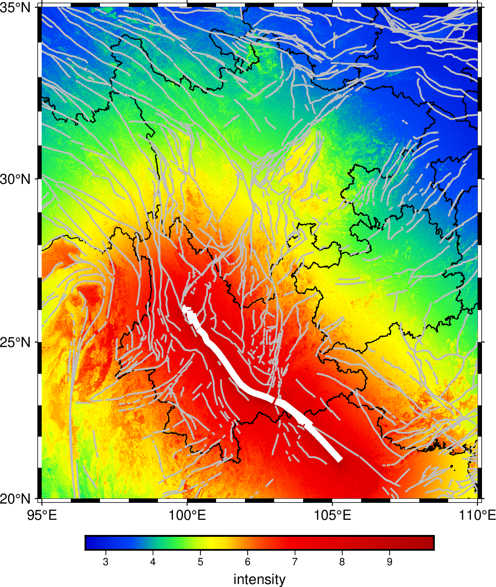

grdshake
- 官方文档:
- 简介:
使用 Vs30 速度模型计算地表峰值速度、加速度、烈度。
语法
gmt grdshake
ingrid
-Goutgrid
-Lfault.dat
-Mmag
[ -Ca,v,i ]
[ -Fmecatype ]
[ -Rregion ]
[ -V[level] ]
[ -iflags ]
[ -:[i|o] ]
输入数据
ingrid[=ID|?varname][+bband][+ddivisor][+ninvalid][+ooffset][+sscale]
输入网格名。通过追加 =ID 可指定 网格格式 [默认为 =nf]。 追加 ?varname 可指定 NetCDF 变量 [默认为 GMT 找到的第一个 2-D 网格]。 参数详细介绍请参考 读 netCDF 文件。
Vs30 速度模型网格文件。
必须选项
- -G
-Goutgrid[=ID][+ddivisor][+ninvalid][+ooffset|a][+sscale|a][:driver[dataType][+coptions]]
输出网格文件名。通过追加 =ID 可指定 网格格式。 参数详细介绍请参考 写 netCDF 文件。
如果通过
-C设置了多个分量， 则 outgrid 必须包含 %%s 以格式化分量代码。
- -L
- -Lfault.dat
发生滑动的断层，它的迹线经纬度坐标文件。 内容格式与表示线段的格式相同，也可以是多段数据表示的多条线段，表示多个断层同时发生滑动。
- -M
- -Mmag
地震事件的震级
可选选项
- -C
- -Ca,v,i
以逗号隔开的需要计算的分量 (多个分量要求在
-G有对应设置)。 可以选择 a(cceleration，加速度)， v(elocity，速度)， i(ntensity，烈度) [默认为 i]。
- -F
- -R
- -Rxmin/xmax/ymin/ymax[+r][+uunit]
指定数据范围。 (参数详细介绍)
- -V
- -V[level]
设置 verbose 等级 [w]。 (参数详细介绍)
- -i
- -icols[+l][+sscale][+ooffset][,...][,t[word]]
对输入的数据进行列选择以及简单的代数运算。 (参数详细介绍)
- -:
- -:[i|o]
交换输入或输出数据的前两列。 (参数详细介绍)
- -^ 或 -
显示简短的帮助信息，包括模块简介和基本语法信息（Windows下只能使用 -）
- -+ 或 +
显示帮助信息，包括模块简介、基本语法以及模块特有选项的说明
- -? 或无参数
显示完整的帮助信息，包括模块简介、基本语法以及所有选项的说明
- --PAR=value
临时修改GMT参数的值，可重复多次使用。参数列表见 配置参数
示例
使用计算好的 Vs30 速度模型，针对一次发生在断层上的地震事件（震级为7）， 计算地表峰值烈度。其断层迹线坐标保存在 line.dat 文件中:
gmt grdshake vs30.grd -Gshake_intensity.grd -Lline.dat -Ci -M7
计算并绘制发生在红河断裂的一个9级地震，在云贵川三省造成的地表峰值烈度：
gmt begin grdshake-example
gmt basemap -R95/110/20/35 -JM10c -Baf
# global_vs30.grd是USGS计算好的全球Vs30速度模型网格文件
# 具体可以参考 https://earthquake.usgs.gov/data/vs30/ 自行下载，并获取更多信息
gmt grdcut global_vs30.grd -R95/110/20/35 -Gvs30.grd
# 提取红河断裂的数据，保存在line.dat文件中
gmt convert CN-faults.gmt -S"FN_Ch=红河断裂" -o0,1 > line.dat
# 计算地表峰值烈度
gmt grdshake vs30.grd -Gintensity.grd -Lline.dat -Ci -M9
# 绘制地表峰值烈度
gmt grd2cpt -Cseis -I -Z -D intensity.grd
gmt grdimage intensity.grd -C
gmt colorbar -C -Ba1+lintensity
# 绘制省界，断层
gmt plot CN-border-La.gmt -W0.5p
gmt plot CN-faults.gmt -W1p,gray
gmt plot line.dat -W4p,white
rm vs30.grd line.dat intensity.grd
gmt end show
{kind=link}

参考链接
新版中国大陆工程场地VS30 地图（2024）： https://seismisite.net/